Attention Lecture 3
2026-03-09
PDF of these slides
(some of the images may not be included; I am working on fixing this)
LECTURE 2 review / clean-up
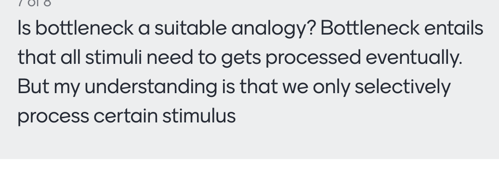
- Unlike highway bottlenecks, pre-bottleneck stimuli are constantly replaced
- In real life
- In the two-letter experiment
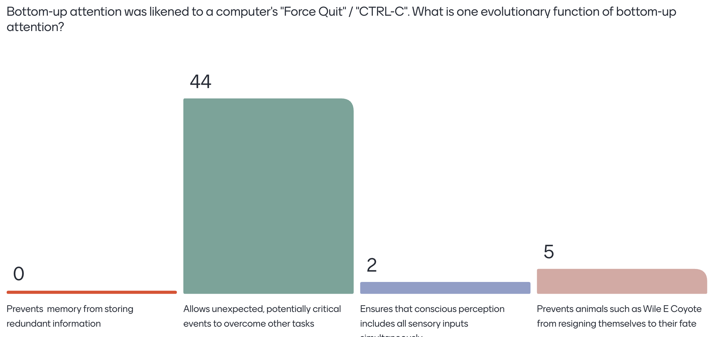
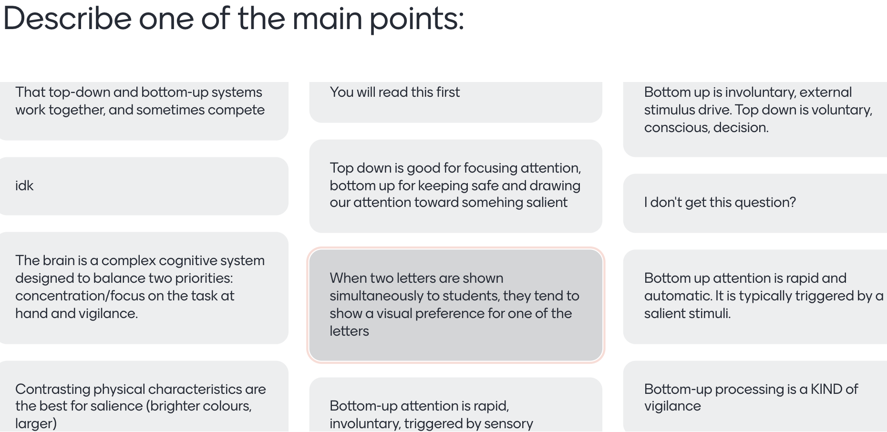
“What most often distracts you during a lecture?”
The in-class reading experiment
We turned off the top 2: Phones and Computer notifications
TODAY
- The in-class distraction study
- Explore-exploit dilemma
- Understand what it means and the relation to habits
- Understand how a study showed its relation to learning a new task
- Know how it varies over the lifespan
- Know its connection to mind-wandering
Interruption of focus
- Vigilance
- Drive for exploration
The explore/exploit dilemma
We must choose between
- the action that we estimate will yield the best consequence (highest value)
- trying an action of unknown or less certain value.
The explore/exploit dilemma
- When we find something rewarding/worthwhile, it makes sense to exploit it
- A known source of reward can be a sure thing
- Associative/reinforcement learning pulls us toward those
- To facilitate discovery of better options, we have a drive to explore
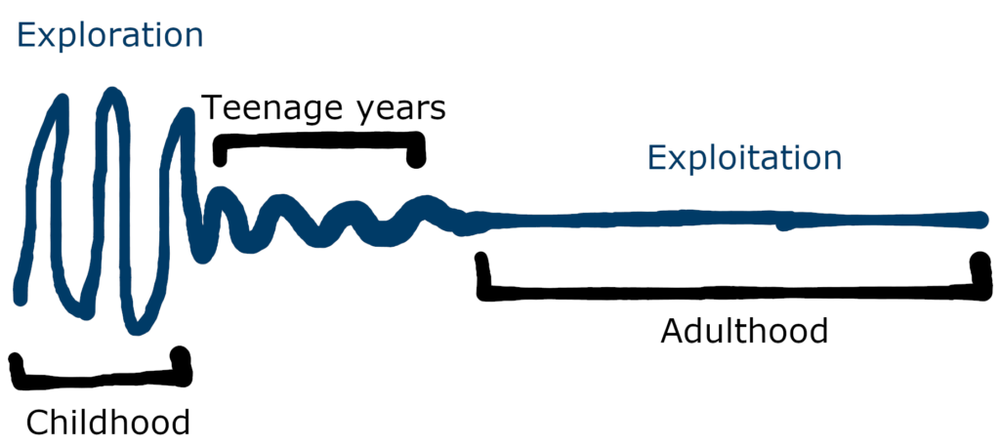
- First: explore the possibilities
Mind-wandering
- Even when there’s zero distractions, sometimes our mind wanders
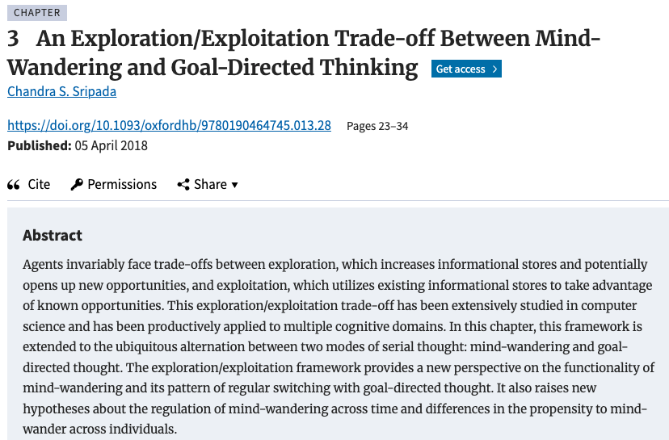
- Partly due to drive for exploration
Too much exploitation
- rely on suboptimal options and seldom discover higher-reward options
Too much exploration
- waste time exploring the possibilities without getting a sure-thing reward
Lab study of explore-exploit
Stafford et al. (2012)
Certain characteristics of movement yield points (reinforcement signal)
Could be:
- a ‘hotspot’
- relative motion anywhere in absolute space, such as a line or circle
- could reflect movement timing, e.g. speed, regardless of its spatial characteristics
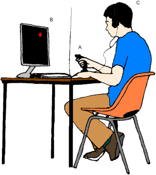
Not maximizing performance during early task practice = superior subsequent performance.
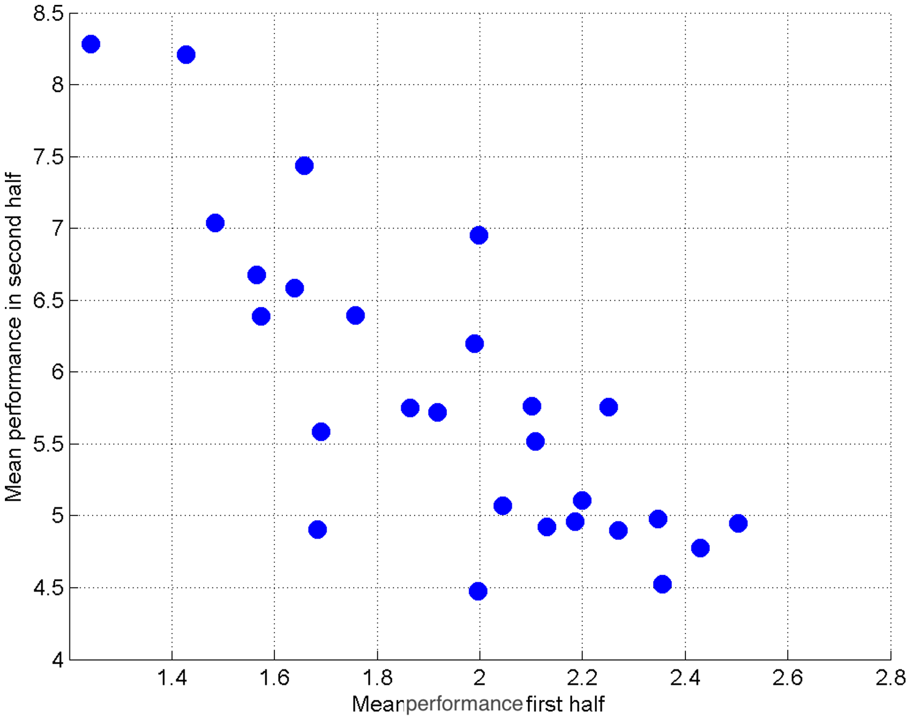
Not maximizing performance during early task practice = superior subsequent performance.
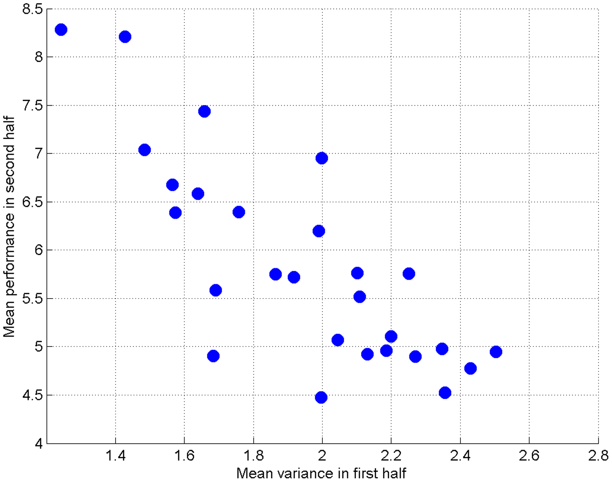
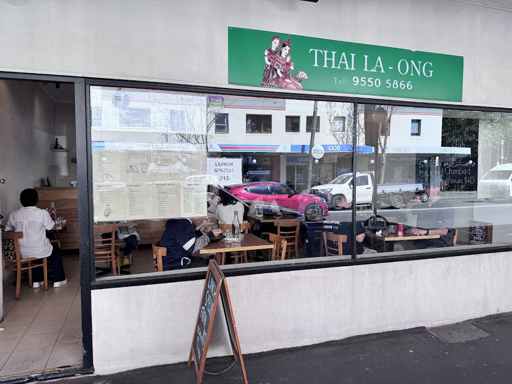
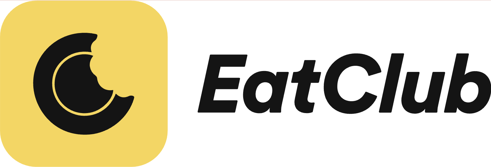
Vigilance is more about threats than general exploration
- Behaviors and systems that support vigilance also support exploration
- Periodically scanning the environment
- Sensory systems that draw attention to new things
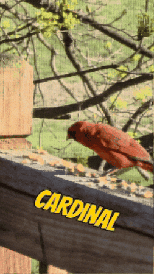
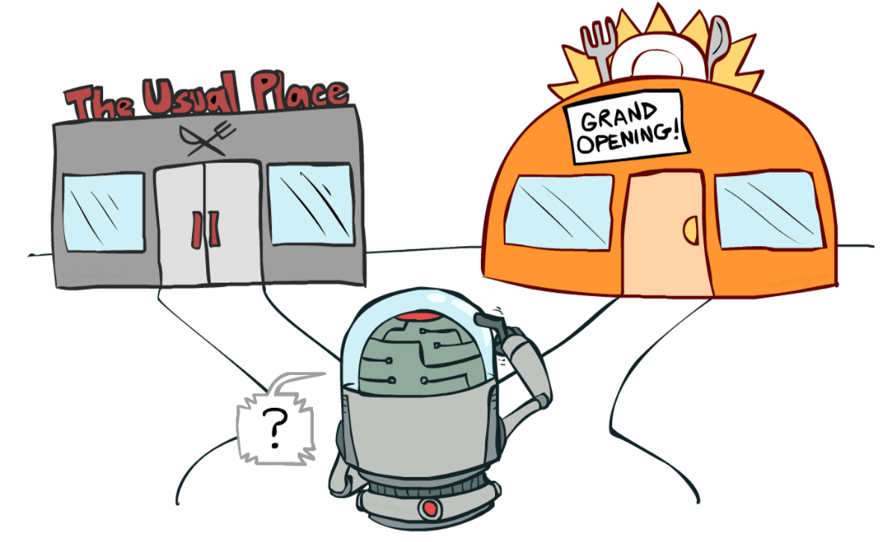
Exploitation - using known information to get rewards
Exploration - exploring the environment to look for new information/rewards
Our phone obsession is partly about exploiting what has already been shown to be rewarded
I have found countless rewarding things in my phone
I’d never been to this place in Perth = don’t have much reward associated with looking around
Maybe our drive for exploration is not strong enough
TODAY
- The in-class distraction study
- Explore-exploit dilemma
- Understand what it means and the relation to habits
- Understand how a study showed its relation to learning a new task
- Know how it varies over the lifespan
- Know its connection to mind-wandering
MENTIMETER
Menti.com
2795 8157
Let’s spend the next five minutes and finish reading / re-read Chapter 5
Top-down combines with bottom-up (Ch. 5)
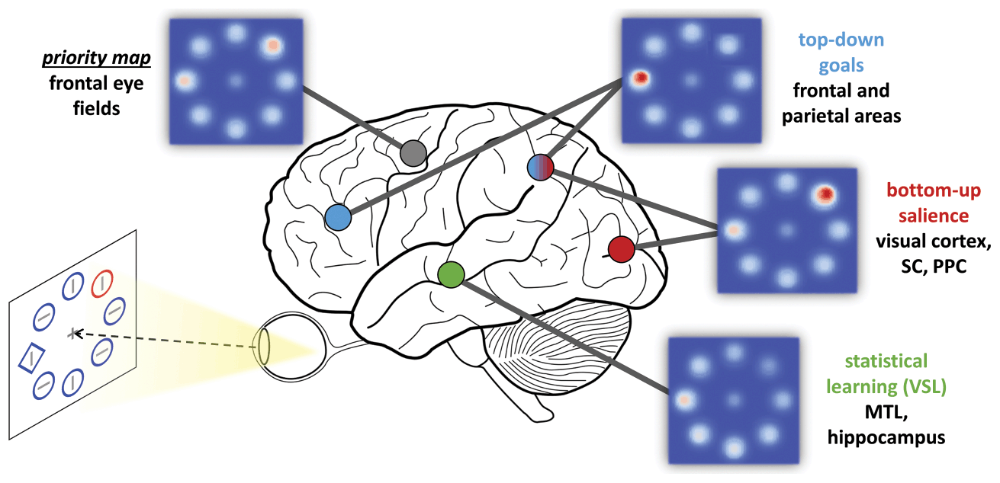
To ask another question, go back to
Menti.com
2795 8157